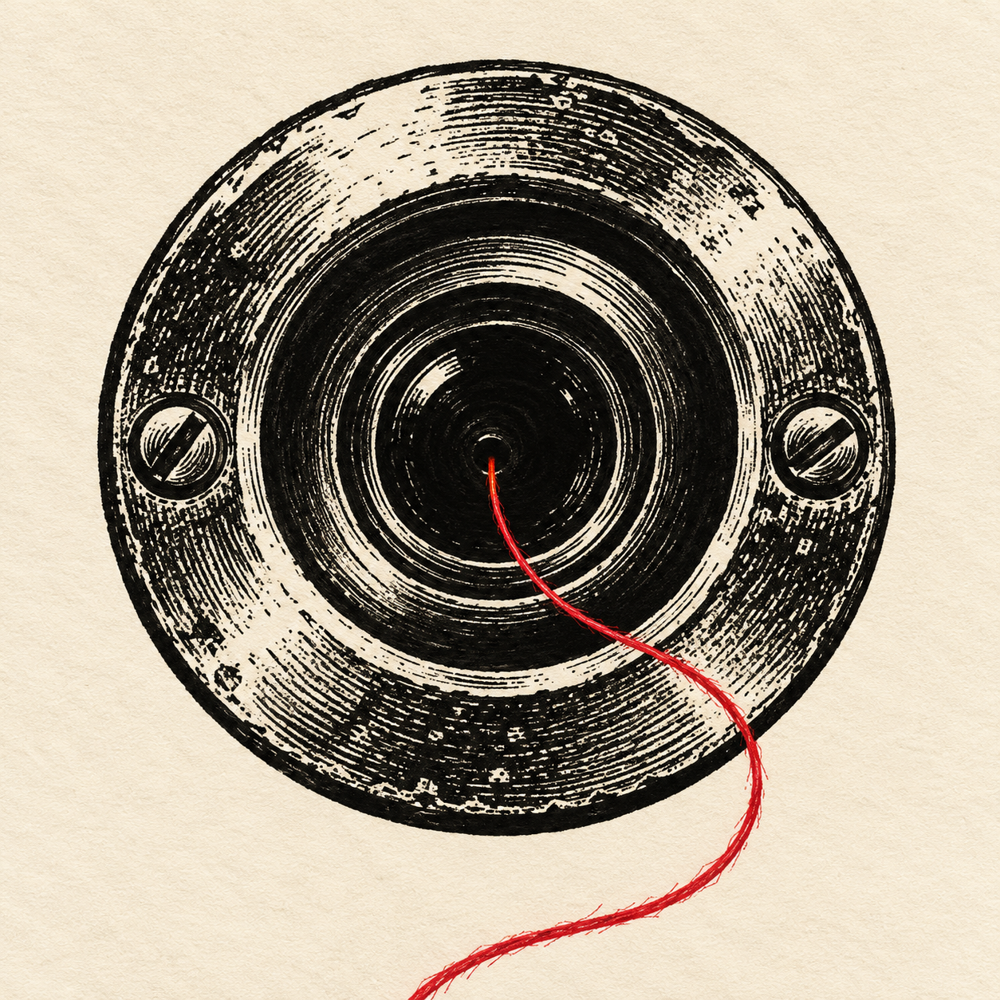

<title>Ночная гравюра: первые Shorts</title>
<meta name="claude:viewport-fit-sides" content="cover">
<link rel="stylesheet" href="https://fonts.googleapis.com/css2?family=Montserrat:wght@800;900&family=PT+Mono&display=swap">
<style>
  /* layout: a dark print sheet, four vertical prints in a row that wraps to one column on a phone */
  :root { --ink: #15120e; --paper: #ece2cb; --dim: #a89c82; --red: #e2353f; --line: #3a332a;
    --display: 'Montserrat', 'Arial Black', system-ui, sans-serif; --mono: 'PT Mono', ui-monospace, monospace; color-scheme: dark }
  body { background: var(--ink); color: var(--paper); font-family: var(--display);
    padding-left: max(16px, env(safe-area-inset-left, 0px)); padding-right: max(16px, env(safe-area-inset-right, 0px)); padding-block: 28px 48px }
  header { max-width: 1200px; margin: 0 auto 24px; display: grid; gap: 8px }
  h1 { margin: 0; font-weight: 900; font-size: clamp(28px, 5vw, 44px); text-transform: uppercase; letter-spacing: -0.5px; text-wrap: balance }
  h1 span { color: var(--red) }
  .note { font-family: var(--mono); color: var(--dim); font-size: 14px; max-width: 62ch; line-height: 1.5 }
  .grid { max-width: 1200px; margin: 0 auto; display: grid; grid-template-columns: repeat(auto-fit, minmax(240px, 1fr)); gap: 20px }
  figure { margin: 0; display: grid; gap: 10px; min-width: 0 }
  video { width: 100%; max-width: 100%; aspect-ratio: 9 / 16; background: #000; border: 3px solid var(--paper); display: block }
  figcaption { display: grid; gap: 4px }
  .name { font-weight: 900; font-size: 18px; text-transform: uppercase }
  .meta { font-family: var(--mono); font-size: 13px; color: var(--dim) }
</style>
<header>
  <h1>Ночная <span>гравюра</span>: четыре Shorts</h1>
  <p class="note">Новое: семь историй одним видео на 4 минуты и аватарка канала. Ниже отдельные Shorts первой партии.</p>
</header>
<section class="grid" style="margin-bottom:36px">
  <figure><video src="night.mp4" controls playsinline preload="metadata"></video>
    <figcaption><span class="name">Семь историй</span><span class="meta">4:11 · Три стука, Звонок, Девятнадцатый этаж, Шаги сверху, Фото из угла, Окно напротив, Свет в шкафу</span></figcaption></figure>
  <figure>
    <figcaption><span class="name">Аватарка</span><span class="meta">сгенерировал ChatGPT · глазок и красная нить</span></figcaption></figure>
</section>
<main class="grid">
  <figure><video src="LinoKnock.mp4" controls playsinline preload="metadata"></video>
    <figcaption><span class="name">Три стука</span><span class="meta">35 с · бытовой хоррор</span></figcaption></figure>
  <figure><video src="LinoElevator.mp4" controls playsinline preload="metadata"></video>
    <figcaption><span class="name">Девятнадцатый этаж</span><span class="meta">39 с · бытовой хоррор</span></figcaption></figure>
  <figure><video src="LinoPhoto.mp4" controls playsinline preload="metadata"></video>
    <figcaption><span class="name">Фото из угла</span><span class="meta">33 с · бытовой хоррор</span></figcaption></figure>
  <figure><video src="LinoGames.mp4" controls playsinline preload="metadata"></video>
    <figcaption><span class="name">Если играть всю ночь</span><span class="meta">36 с · что будет, если</span></figcaption></figure>
</main>
